Claude Code / GitHub Copilot / Gemini CLI / OpenClaw の4つのAIと協働し、2ヶ月弱で構築した自動化インフラ
AIを「道具」として活用し、設計・実装・テスト・レビューの全工程を人間とAIが分担する協調開発スタイルで構築しました。 人間が方針決定・設計・品質判断を担い、AIが実装・テスト生成・コードレビューを担当。 この体制により、短期間で高品質なシステム群を効率的に構築しています。
Ubuntu VPS（3vCPU / 3.8GB RAM）上に11以上のWebサービスを構築・運用するインフラ基盤です。 Caddyをリバースプロキシとして使用し、Basic認証によるアクセス制御、 systemdによるサービス管理、cronによる定期タスクの自動実行を実現。 バックアップはGitによるソースコード管理と、GPG暗号化による日次自動バックアップの2層体制で、 データ損失リスクを最小化しています。 VPS再作成時の復旧手順書と自動復旧スクリプト（bootstrap-openclaw-vps.sh）も整備済みです。
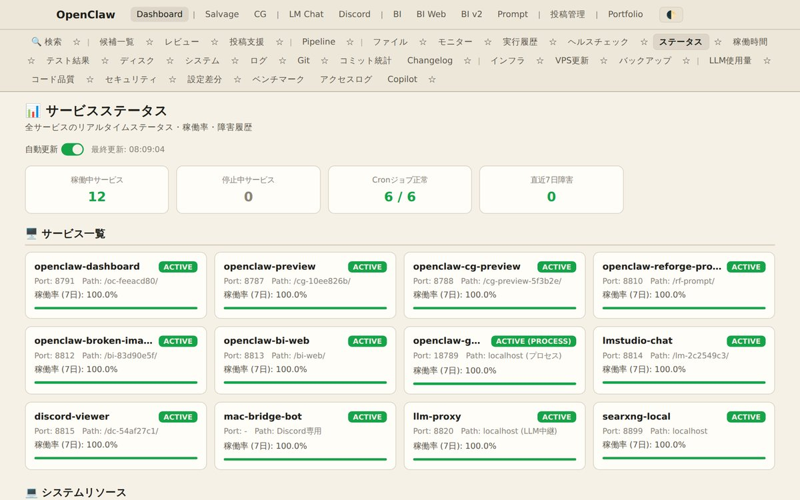
サービスステータス — 全11サービスの稼働状況を一覧表示20以上のページで構成される総合的な運用監視ダッシュボード。 Git活動のコミット頻度・コード複雑度分析、セキュリティ監査結果の可視化、 システムリソース（CPU/メモリ/ディスク）のリアルタイム監視、 cron実行履歴の追跡、バックアップ状態の確認、LLM API使用量の追跡など、 運用に必要な情報を一元管理しています。 GitHub Copilotとの連携により、70以上のタスクを自動実行する仕組みも構築。 Playwright E2Eテストで全ページの表示・リンク整合性を自動検証しています。
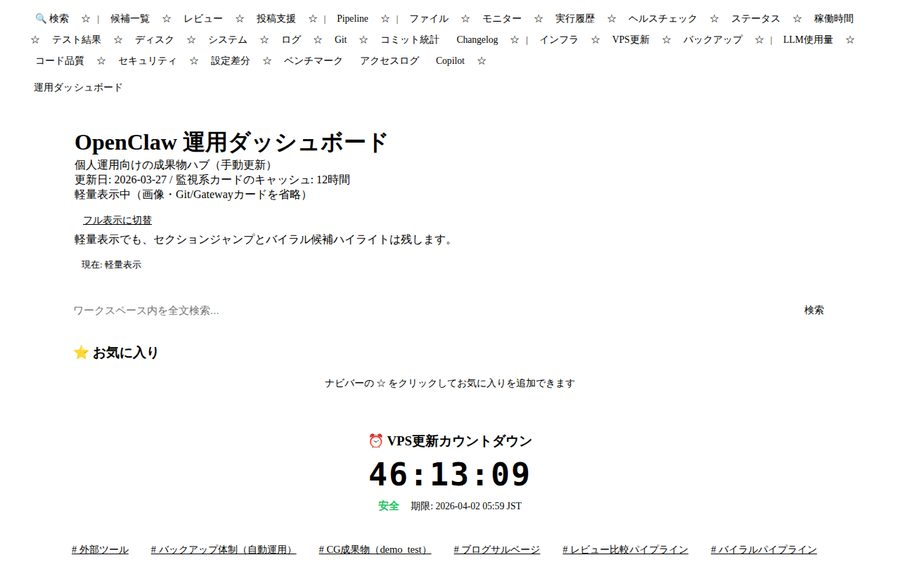
メイン画面 — Git活動・リソース監視の概要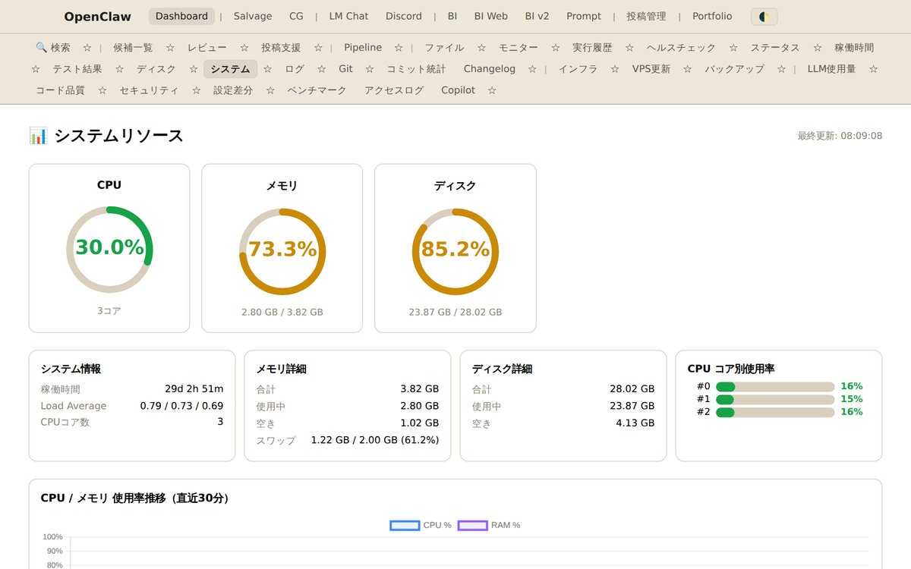
システム監視 — CPU/メモリ/ディスク使用率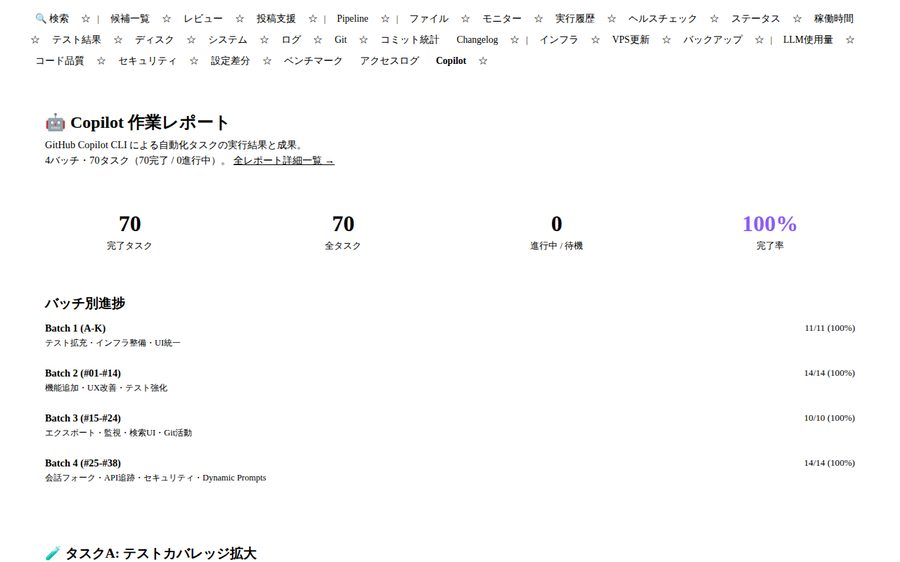
Copilot作業レポート — タスク別進捗・成果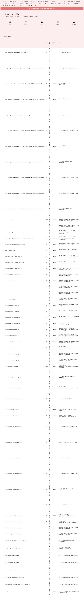
セキュリティ監査 — 脆弱性チェック結果3つの独立したパイプラインで構成される自動化システム群です。 それぞれが異なる領域の業務を自動化し、手作業を最小限に抑えています。
8つのステージ（judge → intent → outline → draft → smell → check → assemble → route）で LLMを活用したブログ記事を自動生成。MacBook上のLM Studio（ローカルLLM）にTailscale VPN経由で接続し、 4Bモデルで83秒/記事、35Bモデルで196秒/記事の処理速度を実現。 FC2・Livedoor・VPSの3媒体への自動ルーティングに対応。117件のリグレッションテストで品質を担保しています。
SearXNG（プライバシー重視のローカルメタ検索エンジン）、はてなブックマーク、X API v2の3つのソースから 話題のコンテンツを自動収集。スコアリングv2アルゴリズムで品質ドメインにボーナスを付与し、 ダッシュボードで候補を一覧表示。毎日06:30 JSTにcronで自動実行されます。
ComfyUI（MacBook M1 Max、Tailscale VPN経由）でAI画像生成 → FlaskレビューUI → テキスト焼き込み （縦書き・横書き・マンガレイアウト対応、フォント: Noto Sans CJK JP）→ ZIP/PDFエクスポートまでを半自動化。 webp/jpg/png形式に対応し、QAバリデーションで品質を自動検証しています。
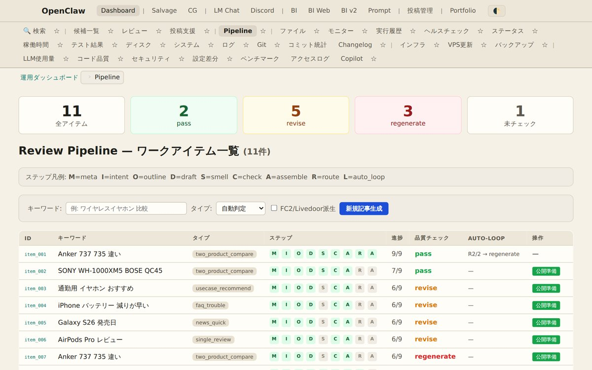
パイプライン管理 — ステージ別進捗表示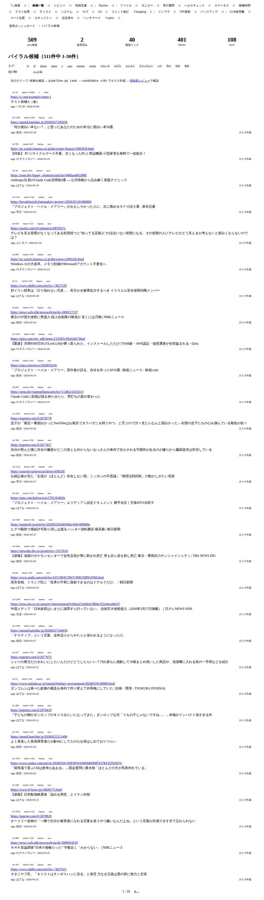
バイラル候補 — スコア順に自動収集された記事一覧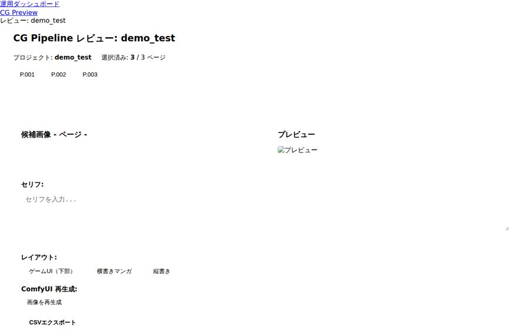
CGプレビュー — AI生成画像のレビューUIMacBook上で動作するLM Studio（ローカルLLM）とComfyUI（画像生成AI）の Webフロントエンドです。ChatGPT風のUIでローカルLLMとチャットでき、 複数セッションの管理（ChatGPTのようなサイドバー方式）、会話のエクスポート/インポートに対応。 画像生成ではDynamic Promptsによるプロンプト展開、プロンプト履歴・お気に入り機能を搭載。 全てのデータはローカル（localStorage）に保存されるプライバシー重視の設計で、 サーバーサイドのログ記録を完全に無効化しています。
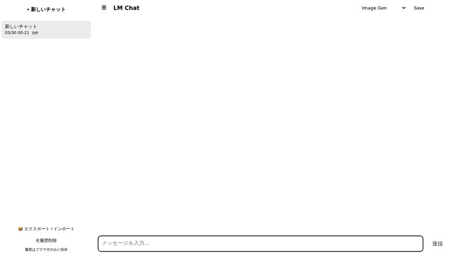
チャットUI — ChatGPT風のサイドバー + マークダウン表示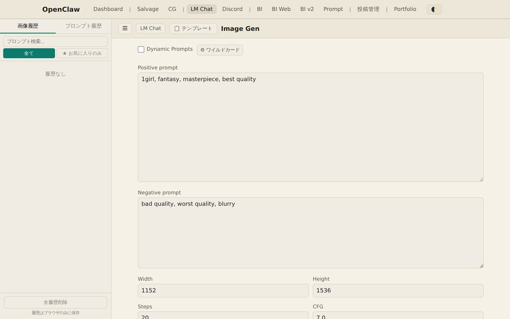
画像生成UI — Dynamic Prompts対応Discordの会話ログをSQLite FTS5（全文検索エンジン）で高速に検索できるWebUI。 チャンネル・著者・日付によるフィルタリング、タイムライン表示に対応。 NDJSONフォーマットでのインポートにより、大量のログデータを効率的に取り込めます。 毎日04:00 JSTにcronで自動同期し、最新の会話ログが常に検索可能な状態を維持しています。
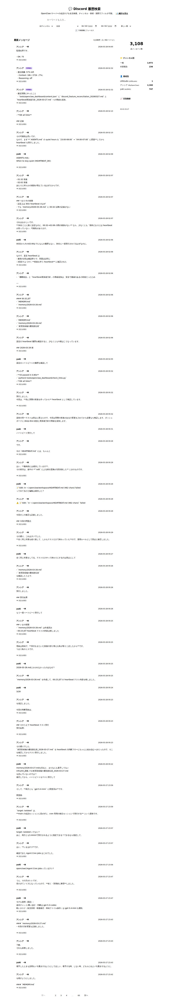
ログ検索UI — FTS5による高速全文検索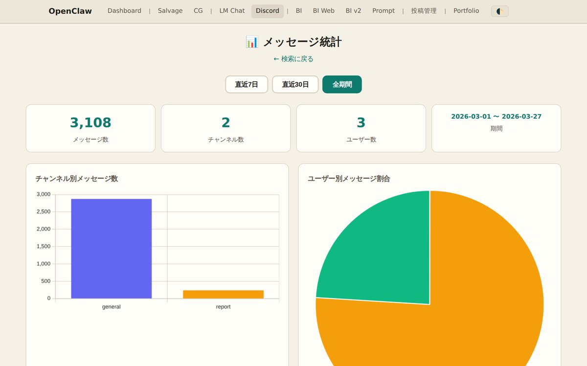
統計表示 — チャンネル別・著者別の活動分析FC2・Livedoor・WordPress・汎用HTMLに対応した、ブログ記事の収集・保存エンジン。 Readability.js（Node.js）による記事本文の自動抽出で、広告やナビゲーション要素を除去し 本文だけを正確に取得します。プレビューUI、タグ管理、バルク操作（一括処理）、 Markdownエクスポートなど、記事のサルベージに必要な機能を包括的に提供。 記事のステータス管理（new → reviewed → ready_to_repost → done/skipped）で 作業フローを効率化しています。
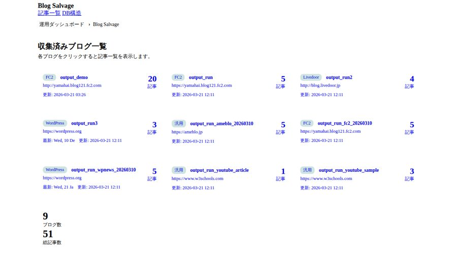
記事一覧 — ステータス管理 + プレビュー機能AI画像生成（ComfyUI / Stable Diffusion）で使用するプロンプトの比較・評価を行うWebインターフェース。 異なるプロンプトで生成された画像をサムネイル一覧で並べて比較し、 効果的な表現パターンを見つけるためのツールです。 プロンプトのテキストと生成結果を対にして管理し、 どのキーワードや構文が画質・構図・スタイルに影響するかを視覚的に分析できます。
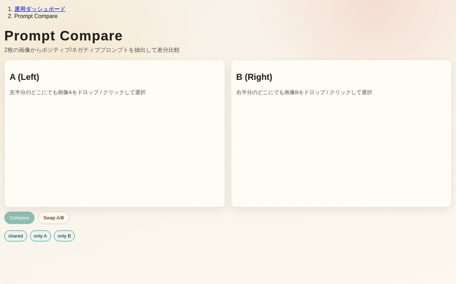
プロンプト比較 — 生成画像の並列比較Webサイト内の壊れた画像（404エラー、読み込み失敗）を自動検出するツール。 指定したURLをクロールし、全ての画像リンクの有効性を検証します。 2つのバージョンを提供しています:
サーバー版（Python / FastAPI）はサーバーサイドでHTTPリクエストを送信して検証。 Web版（BI Web）は完全にクライアントサイドで動作し、 HTML5 Canvas APIを使って画像の読み込み可否を判定するため、サーバー不要で動作します。
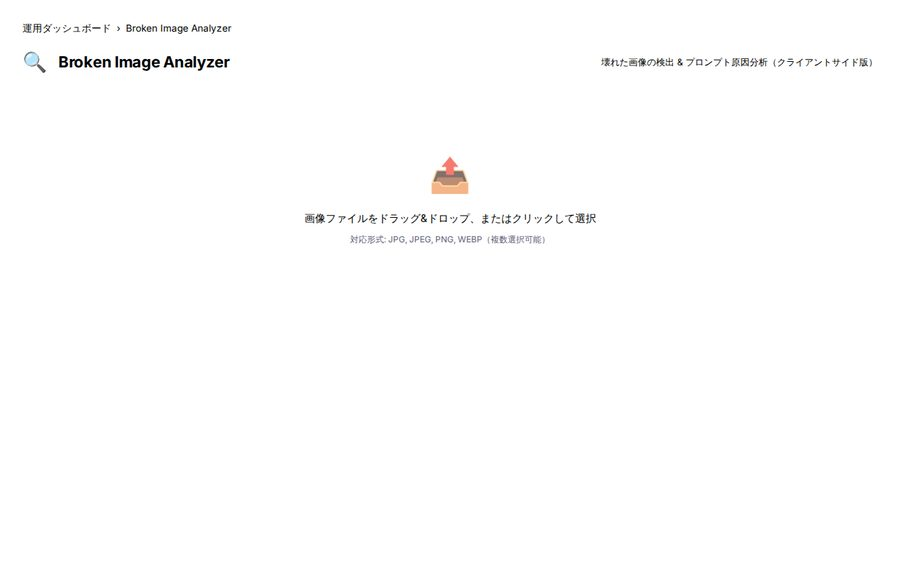
BI Web — ブラウザだけで動作するクライアントサイド版全プロジェクトを横断する包括的なテスト・品質保証体制を構築。 Playwright E2Eテスト868件で全ページのビジュアル確認・パフォーマンス測定・リンク整合性を自動検証。 pytest ユニットテスト600件以上（17スイート）で各モジュールの動作を個別に検証。 GitHub CopilotによるPR自動レビューを組み込み、コード品質の維持を自動化しています。 公開URLのリンク監査（web_qa）も毎日05:00 JSTに自動実行し、外部リンク切れを検出します。
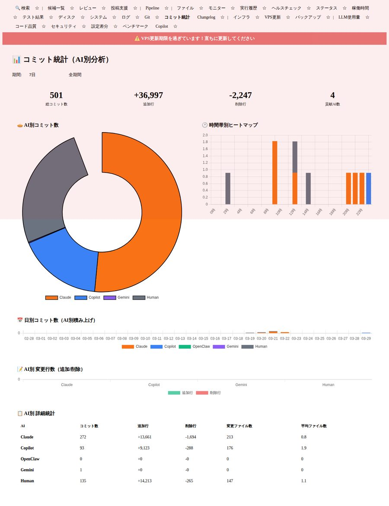
コミット履歴 — 日々の開発活動を可視化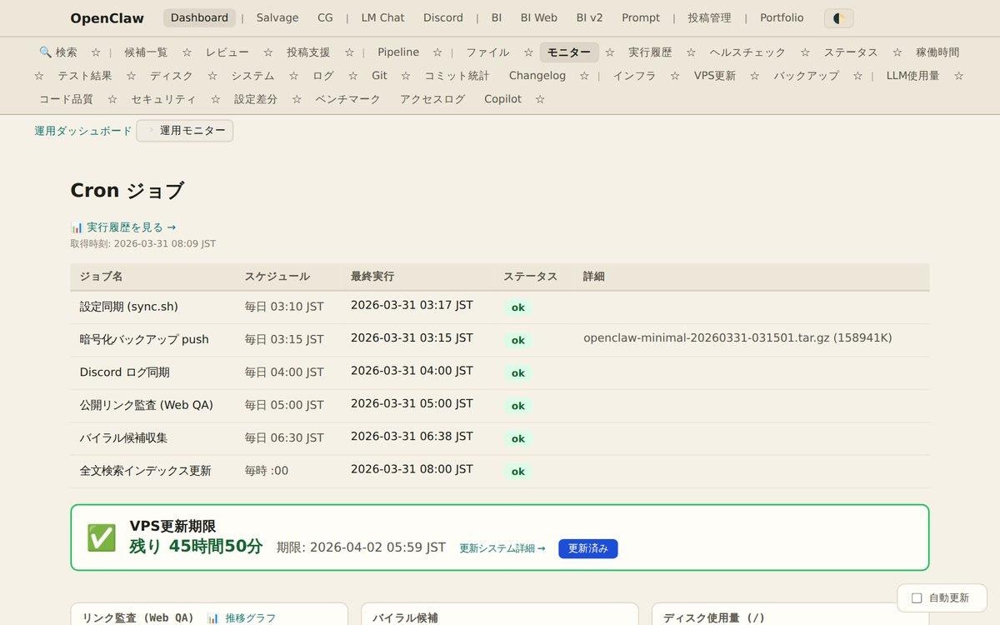
cron実行履歴 — 自動テスト・監査の実行記録
本プロジェクト群の最大の特徴は、4種類のAIコーディングツールを役割分担させた協調開発体制です。
単にAIにコードを書かせるのではなく、各AIの特性を活かした明確な役割分担、
ファイルベースの共有メモリによるセッション間の状態共有、
統一されたgitアイデンティティとCo-authored-byトレーラーによる貢献追跡、
構造化されたHandoffプロトコルによるAI間のタスク引継ぎなど、
体系的なマルチAIオーケストレーションを実現しています。
| AI | 主な役割 | 自律度 | 特徴 |
|---|---|---|---|
| Claude Code | ユーザー直接指示の実装・運用 | 全権（danger mode） | 複雑な設計判断、大規模リファクタリング |
| Gemini CLI | 長時間自律作業 | 全権（YOLO mode） | 1Mトークンの長大コンテキスト活用 |
| GitHub Copilot CLI | CLIタスク・PR作成 | 制限付き（commitのみ） | GitHub連携、コードレビュー |
| OpenClaw | 自律heartbeat（5h周期） | 自律運転 | ChatGPT OAuth連携、Discord統合 |
Co-authored-byトレーラーで貢献元を区別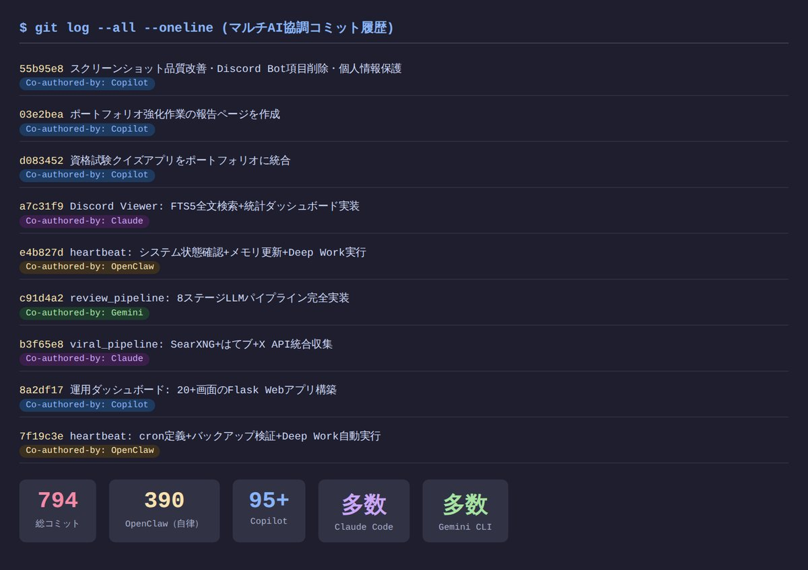
コミット履歴 — 4種類のAIによる協調開発の実態FP2級（ファイナンシャル・プランナー）と行政書士の資格試験対策用ブラウザベースクイズアプリ。 サーバー不要で、HTMLファイルをブラウザで開くだけで動作します。 学習履歴をlocalStorageに保存し、間違えた問題を優先的に出題する 加重ランダム出題アルゴリズムを実装。 正解数 − 不正解数 ≥ 3 で「卒業」判定し、習得済みの問題は自動的に出題から除外されます。 問題管理UI（追加・編集・削除）とJSONインポート/エクスポート機能も搭載しており、 自分で問題を追加しながら学習を進められます。